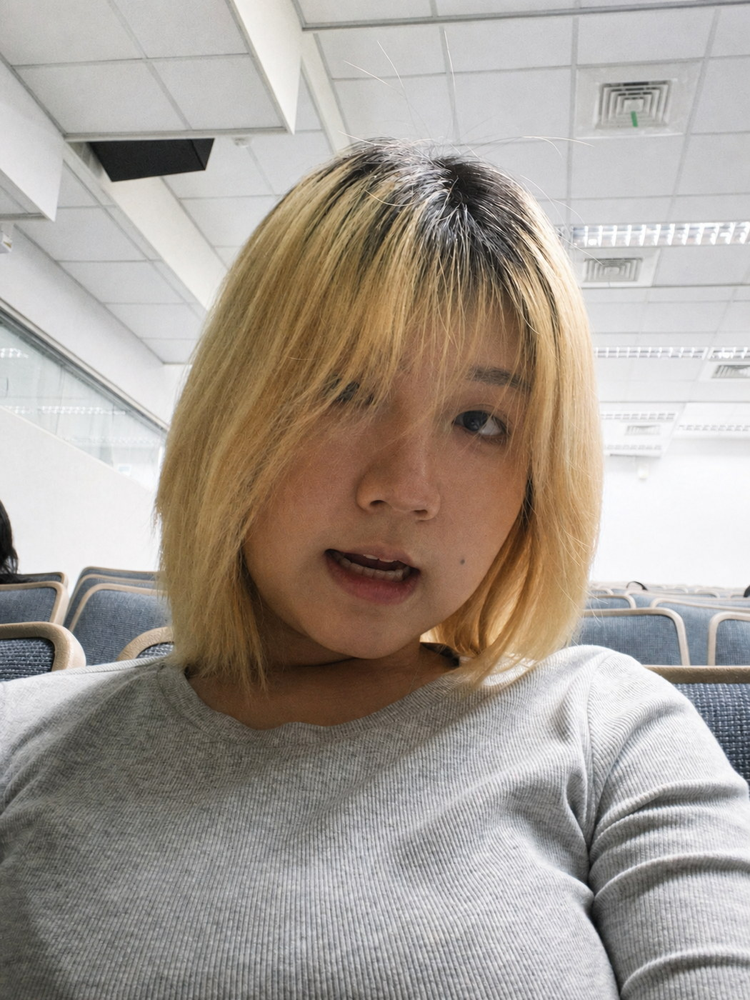
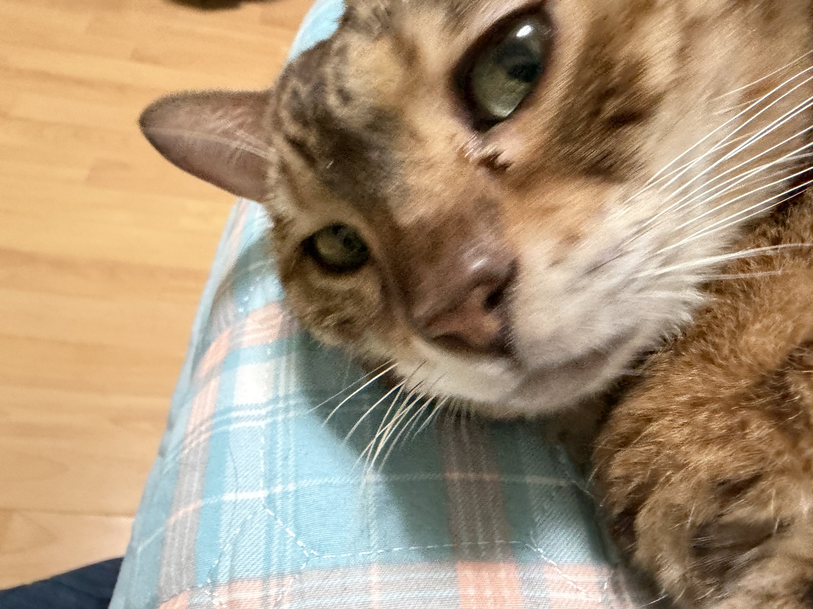

ABOUT ME
我是酸辣辣！
來自雲林科技大學視覺傳達系二年級，擅長用可愛的風格表現，平時最喜歡看電影和動畫，還有和大家分享我的貓。


MY STORY
把想法變成具象的水果行！
我喜歡漫步在街上：招牌的顏色、老闆俐落的動作、紙箱上手寫的字，都有一種真誠純樸的生命力。這個小作品集便從「水果行」出發，把我的作品當成一箱箱當季鮮貨，熱情地介紹給大家。
我喜歡思考與感受。先理解真正的問題，再用鮮明的視覺語言與細緻的互動，做出好看也好用的成果。
我的配方
視覺設計插畫愛好奇心